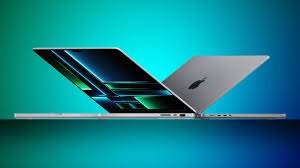
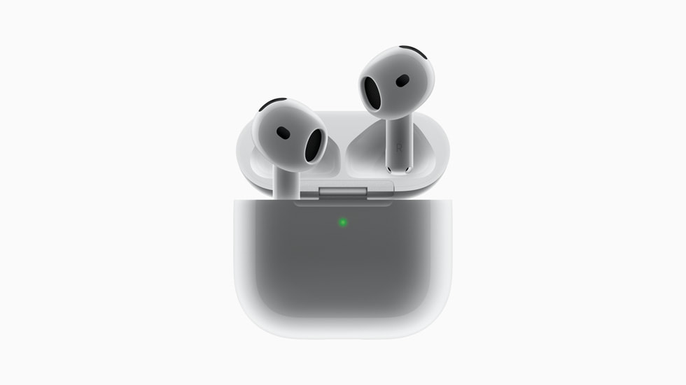

The latest MacBook Pro (2024) is a powerhouse, featuring Apple's new M4 series chips—M4, M4 Pro, and M4
Max—built on a 3-nanometer process for enhanced performance and efficiency. These chips deliver exceptional
speed, with up to a 16-core CPU and 40-core GPU in the M4 Max, making it ideal for demanding workloads like 3D
rendering and machine learning. The laptops also include Thunderbolt 5 for faster data transfer and
connectivity, along with a stunning Liquid Retina XDR display with an optional nano-texture finish
 The iPhone 16 Pro Max features a sleek titanium body, a larger 6.9-inch OLED display with a smooth 120Hz refresh rate, and the powerful A18 Pro chip for improved performance and energy efficiency. Its upgraded camera system includes a 48MP main lens, a 48MP ultra-wide lens, and a 5x optical zoom periscope telephoto lens, along with 4K video recording at 120fps. It also supports Wi-Fi 7, advanced 5G, and runs on iOS 18 for seamless AI integration and better ecosystem compatibility
The iPhone 16 Pro Max features a sleek titanium body, a larger 6.9-inch OLED display with a smooth 120Hz refresh rate, and the powerful A18 Pro chip for improved performance and energy efficiency. Its upgraded camera system includes a 48MP main lens, a 48MP ultra-wide lens, and a 5x optical zoom periscope telephoto lens, along with 4K video recording at 120fps. It also supports Wi-Fi 7, advanced 5G, and runs on iOS 18 for seamless AI integration and better ecosystem compatibility

The AirPods 4 feature a refined open-ear design for enhanced comfort and improved audio quality powered by Apple's H2 chip. Available in standard and noise-canceling (ANC) models, they deliver personalized spatial audio, up to 30 hours of battery life with the case, and USB-C charging. The ANC version includes wireless charging and built-in speakers for "Find My" support, priced at $179, while the base model costs $129